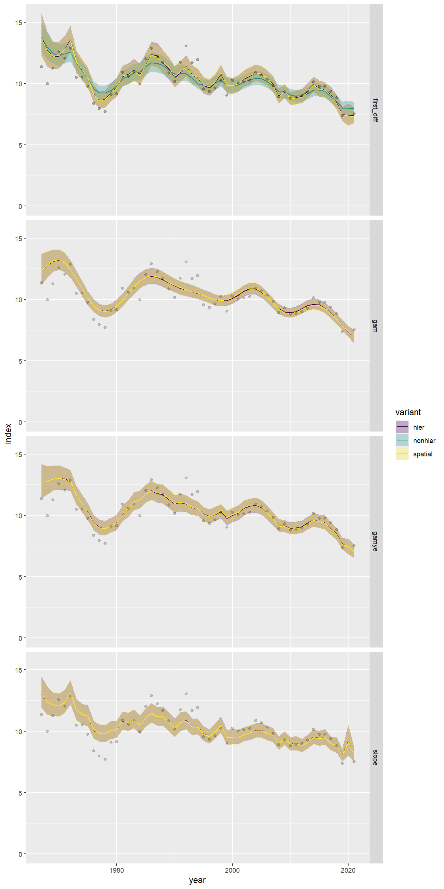
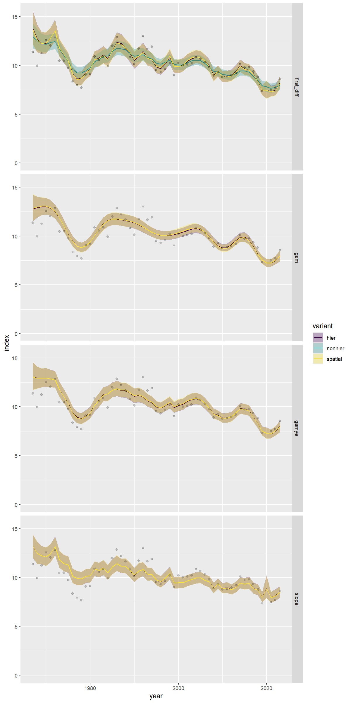

There are 9 types of models that can be run with bbsBayes2. For a
quick overview you can access the bbs_models data
frame.
bbs_models
#> # A tibble: 9 × 3
#> model variant file
#> <chr> <chr> <chr>
#> 1 first_diff nonhier first_diff_nonhier_bbs_CV.stan
#> 2 first_diff hier first_diff_hier_bbs_CV.stan
#> 3 first_diff spatial first_diff_spatial_bbs_CV.stan
#> 4 gam hier gam_hier_bbs_CV.stan
#> 5 gam spatial gam_spatial_bbs_CV.stan
#> 6 gamye hier gamye_hier_bbs_CV.stan
#> 7 gamye spatial gamye_spatial_bbs_CV.stan
#> 8 slope hier slope_hier_bbs_CV.stan
#> 9 slope spatial slope_spatial_bbs_CV.stanMore specifically, there are four models that each have two variants:
variant = "hier" and variant = "spatial". With
the exception of the first-difference model, which has an additional
non-hierarchical variant variant = "nonhier".
Hierarchical models variant = "hier" are the default
variants for each model. These variants share information on species
abundance and population trends, so that estimates in each stratum are
pulled shrunk closer to the mean across all strata. The
non-hierarchical variant of the first-difference model does not share
information among strata. It estimates abundance and population trends
in each stratum independently of their estimates in all other strata.
This variant is included to support an approximate replication of the
USGS trend analyses. Spatial models are both hierarchical and spatial,
sharing information among strata on the abundance and trends, and
sharing in an explicitly spatial way. This means that each stratum’s
estimates will be pulled closer to the mean of its neighbors.
The four model options vary in the way they estimate the parameters that are most important for understanding the status and trends of bird populations. That is, they vary in the way they estimate the relative abundance and the temporal-changes in relative abundance (population trends), within and among strata. They all share the same set of parameters designed to adjust estimates for variations among observers, first-year observer start-up effects. For more details on these observer-effects and the development of these Bayesian hierarchical models for the BBS, see Link and Sauer 2002, Sauer and Link, 2011, Smith et al., 2014, Link et al., 2017, Link et al. 2020, Smith & Edwards, 2021, Smith et al., 2023 pre-print.
1. First Difference Models
A first-difference model considers the time-series as a random-walk forward and backwards in time from the mid-year of the time-series, so that the first-differences of the sequence of year-effects are random effects with mean = 0 and an estimated variance. The non-hierarchical variant of this model model has been described in Link et al., 2017 the hierarchical and spatial variants are described in Smith et al., 2023 pre-print.
2. Generalized Additive Models
The GAM models the time series as a semiparametric smooth using a Generalized Additive Model (GAM) structure. This model is unique among the bbsBayes2 models in that it does not model annual fluctuations, only smoothed changes in population size through time. As a result, it makes some very strong assumptions about population change. See Smith & Edwards, 2021 for the original formulation. The updated hierarchical and spatial variants of this model are described in this Smith et al., 2023 pre-print.
3. Generalized Additive Models with Year Effect
The GAMYE includes the semiparametric smooth used in the gam option, but also includes random year-effect terms that track annual fluctuations around the smooth. This is the model that the Canadian Wildlife Service is now using for the annual status and trend estimates. See this Smith et al., 2023 pre-print for details on the original formulation and application of this model, see Smith & Edwards, 2021
4. Slope
The slope model estimates the time series as a log-linear regression with random year-effect terms that allow the trajectory to depart from the smooth regression line. It is the model used by the USGS and CWS to estimate BBS trends between 2011 and 2018. The basic model was first described in 2002 Link and Sauer 2002 and its application to the annual status and trend estimates is documented in Sauer and Link, 2011 and Smith et al., 2014.
One species, nine-models
Here is an example application of all nine models and variants applied to the same data set. In this example, we’ve used data for the Scissor-tailed Flycatcher.
You can download the fitted model results for all nine models in a zipped file attachement to the most recent package release. The following code chunk loads each of the fitted model objects, calculates the annual indices and trends, then saves the continent population trajectories and the long-term (1966-2021) trend maps.
saved_trajectories <- NULL
saved_trend_maps <- vector("list",9)
species <- "Scissor-tailed Flycatcher"
# extract the unique numerical identifier for this species in the BBS database
species_number <- search_species(species) %>%
select(aou) %>%
unlist()
for(j in 1:nrow(bbs_models)){
m <- readRDS(paste0("output/",
species_number,
"_",
bbs_models[j,"model"],
"_",
bbs_models[j,"variant"],
".rds"))
i <- generate_indices(m)
trajs <- i$indices %>%
filter(region == "continent") %>%
mutate(model = as.character(bbs_models[j,"model"]),
variant = as.character(bbs_models[j,"variant"]))
saved_trajectories <- bind_rows(saved_trajectories,
trajs)
t <- generate_trends(i)
strata_with_data <- t$meta_strata # meta data in trend object - strata information
# load the original strata map used in the model fitting
# then filter to just the strata with data for this species
data_bounding_box <- load_map(stratify_by = t$meta_data$stratify_by) %>%
filter(strata_name %in% strata_with_data$strata_name) %>%
sf::st_bbox() # create a bounding box for x and y limits
map <- plot_map(t) +
labs(title = paste(bbs_models[j,"model"],
bbs_models[j,"variant"]))+
coord_sf(xlim = data_bounding_box[c("xmin","xmax")],
ylim = data_bounding_box[c("ymin","ymax")])+
theme(legend.position = "none")
saved_trend_maps[[j]] <- map
}This species has moderately rich data across much of its range (the portion of its range covered by the BBS surveys), so the estimated population trajectories are very similar across the different models.
traj_panel <- ggplot(data = saved_trajectories,
aes(x = year, y = index)) +
geom_ribbon(aes(ymin = index_q_0.025,
ymax = index_q_0.975,
fill = variant),
alpha = 0.3)+
geom_line(aes(colour = variant))+
geom_point(aes(x = year, y = obs_mean),
alpha = 0.1)+
scale_colour_viridis_d(aesthetics = c("colour","fill"))+
facet_grid(rows = vars(model))+
scale_y_continuous(limits = c(0,NA))
print(traj_panel)
#> Warning: Removed 9 rows containing missing values (`geom_point()`).
Similarly, the long-term trend maps are generally similar across the different models and variants.
map_panel <- patchwork::wrap_plots(saved_trend_maps,
ncol = 3,
guides = "collect")
print(map_panel)